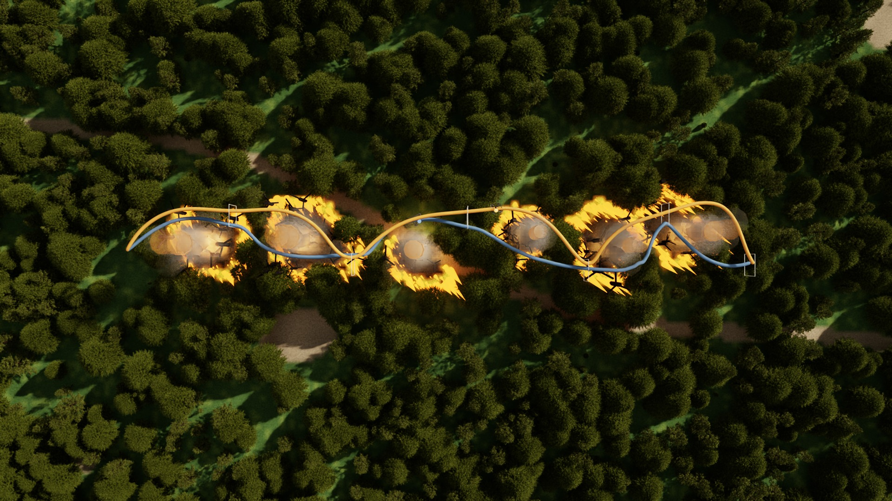

THE MISSION단순히 목적지를 향해
단순히 목적지를 향해
직진할 수 없는 이유.
이 시나리오는 급수 지점에서 투하 지점으로 이동하기 위해 불타는 지역을 건너는 임무입니다. 드론은 연기 사이로 놓인 여섯 개 통로를 지그재그로 지나되, 뜨거운 중심부와 허용 고도 밖으로 벗어나지 않아야 합니다.
물을 실은 드론은 무겁고 반응이 느립니다. 다음 통로가 보인 뒤에 방향을 바꾸면 늦을 수 있어, 언제 미리 돌아 들어가고 언제 속도를 줄일지가 중요합니다.
